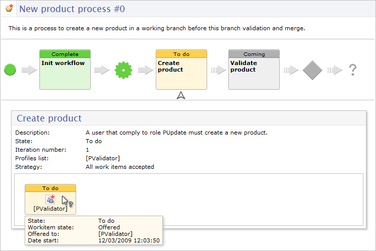

Release Date: January 14, 2010
PostgreSQL (8.3 and further) is now officially supported as a database backend.
A new kind of constraint has been defined to support rich validation plans on tables. Constraints on table allow to perform complex checks on records inside a table. See constraints on table .
Schema generation process has been simplified, allowing the user to generate in a simpler way their first schema in a newly installed repository. The user no longer needs to define technical properties about the model.
New services are available to close a branch or a version.
Constraints on table have been defined for optimizing the global validation process on adaptation table.
The validation process has been enhanced so as to reduce the cost and the duration of the initial and successive validations. Some criteria are statically detected from the model, allowing to avoid the unnecessary validation of nodes. For example, a node which has no constraints and a minOccurs equal to '0' will never be validated. This also concerns the computed values . On large tables using such nodes, the duration of the validation process can be drastically reduced.
The validation service is now subjected to specific permissions. These permissions can be set explicitly on instance level. On home level, the current user cannot perform the validation if it is forbidden on at least one of the instances.
Note: This permission does not apply when the validation is called programmatically.
This new display mode offers a simple and attractive presentation of a running process instance. The information is visual and intuitive.

This release fixes some auto-increment issues. A local cache henceforth avoids expensive intermediate commits of the persisted auto-increment value. Insertions in 'overwriting' and 'occulting' mode are now supported.
Some projects can exploit the fact that the last auto increment value was not stored according to the maximum value found in the updated table. This can now be configured when necessary.
For more information, please refer to the section Auto incremented values .
[1318] History schema is not up-to-date regarding the history documents that are currently generated.
[2168] Inter-instance dependencies are not built when loading a home.
The method SdpInterInstanceDependenciesBuilder::buildDependencies(CfHome aHome) is only called when creating and deleting instances or updating the home.
It should also be called when loading a home for read-only.
[2284] Cannot occult a table record if its key is auto incremented.
When trying to occult an inherited record, it reports an error message: 'cannot create a new occurrence because primary key has undefined elements'.
[2285] Cannot overwrite a table record if its key is auto incremented.
When trying to overwrite an inherited record, it reports an error message: 'cannot create a new occurrence because primary key has undefined elements'.
[2330]ConcurrentModificationException at EBX.Platform boot.
In some cases, EBX.Platform may issue a ConcurentModificationException and fails to start.
[2199] The buttons 'new agreement' and 'new adaptation' are visible in the DMA context even if they are useless.
In EBX, in the DMA Branch, the buttons 'new agreement' and 'new adaptation' are visible at Data Model instance level even if they are useless.
Those buttons should be hidden.
[2281] In Data Model Assistant, the service "Import a model" is erroneous on complex type properties.
When a complex type is defined with advanced properties ( osd:class , osd:access , UiBeanEditor ), these are not imported during the import of an XSD model.
[2286] In Data Model Assistant, the service "Import a model" is erroneous on "rules" parameters.
When the same rule is used on several nodes, the class parameters are imported for the first occurrence of the class but not in the others.
[2322] An inherited attribute field shall not be able to inherit from itself locally.
It is possible to specify a field declaring a local osd:inheritance (that is, the property sourceRecord is not specified) and inheriting from itself (that is, sourceNode is itself). This case is conceptually inconsistent and it leads to infinite loops at runtime. It must be detected and forbidden when validating the schema.
[2333] Auto increment negative step is not supported by EBX.Platform.
In Data Model Assistant, auto increment step can be set to a negative value.
Schema setup does not check for negative step also.
However, this feature is not supported by EBX.Platform.
[2294] The sample for uniqueness constraint in documentation is not a valid xsd declaration.
<xs:unique> tag must be defined under <element> tag. Otherwise, the schema will be validated with errors in XML Spy or Eclipse.
In the documentation sample, <xs:unique> tag is defined under <complexType> tag.
[2274] Problem during import when fields contain the '\' char.
When fields contain the '\' char, the import services are erroneous.
[2282] XML Import in update mode wrongfully executes TableTrigger.handleNewContext() .
[2235] The service "Mutualize common values" does nothing if there is only one adaptation child.
Table values are not mutualized on adaptation parent if there is only one child adaptation.
[2236] Mutualized common value procedure cannot reset a table record to inherited if it includes computed values.
Computed values ( ValueFunction ) prevent from setting a record to inherited (delete overwrite) insofar as computed values are considered as values set, not inherited.
[2237] Table view is not refreshed after 'Mutualize common values' procedure.
If a table (or a hierarchy) is selected in EBX before calling the 'Mutualize common values' procedure, the table view is not refreshed after the end of the procedure, and table content changes may not appear.
[2228] Text fields are no longer focusable with Internet Explorer 8.
In the form view of a table record, if an attribute is a foreign key, the related record is viewable by clicking on the Magnifying glass.
It opens an editable zone (HTML IFrame); after closing this zone, text fields of the original form are no longer focusable or editable.
[2245] In EBX, the page displaying the permissions table is too heavy for large models with numerous nodes.
When a model has a few thousands of nodes, the access to an occurrence of the permissions table could take several minutes.
That case has been optimized in order to improve display times.
[2271] Top banner links are not visible with Mozilla Firefox.
User & Administrate links are not visible when running EBX in non-development mode; background color appears white and links are written in white also.
[2292] On Internet Explorer, a Javascript error may occur when selecting a hierarchy dimension.
On Internet Explorer, when selecting a dimension for hierarchy, a Javascript error occurs if the mouse pointer is over a line of the dimensions tree while opening.
[2296] In the standard 'print service' on table, programmaticaly hidden rows are displayed.
The rows which are programmatically hidden via a SchemaExtension must not be in the printed rows when using the 'print service'.
[2311] EBX is XSS (Cross Site Scripting) vulnerable.
This is a regression since it matches the issue 1739 corrected in release 4.5.3.
[2273] Super-owner can access any data without specific permissions.
Permissions management: the super-owner can access any data without specific permissions even though he is not allowed to.
[2238] Incremental validation may report a minOccurs error on a wrong table.
If table has defined 'minOccurs=0' and table content is emptied, incremental validation may report 'The number of occurrences is less than the minimum specified' on a wrong table node.
[2316]The method ValueContextForValidation.getValue() is erroneous when it is called on a complex node implementing a javaBean.
On a multi-occurrenced complex node, if a programmatic constraint is implemented, the method ValueContextForValidation.getValue(Path) throws a fatal error if a JavaBean is implemented.
[2293] Error in workflow language evaluation if user preferences are not initialized.
In workflow, variables are evaluated for sending mail or displaying label.
This evaluation depends on a locale. If the preferred locale is not initialized for the concerned user, an error may occur ( NullPointerException ).